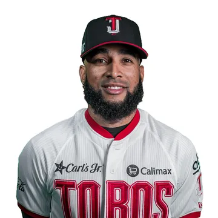
#18Adonis Medina
Lanzador derecho · República Dominicana
Marca de 8-2 en la temporada y 3-0 en la postemporada camino al título.

El roster completo de Toros de Tijuana: 28 jugadores. Las cifras son de la temporada regular 2026.

#18Lanzador derecho · República Dominicana
Marca de 8-2 en la temporada y 3-0 en la postemporada camino al título.
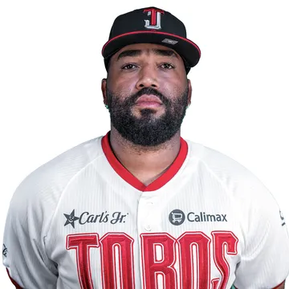
Lanzador derecho · República Dominicana
Relevista: 15 juegos, 3.60 de efectividad y 24 ponches.
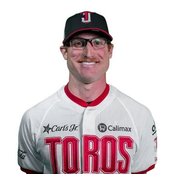
#23Lanzador zurdo · Estados Unidos
Relevista: 37 juegos, 2.02 de efectividad y 37 ponches.
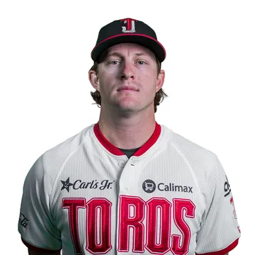
#63Lanzador derecho · Estados Unidos
Cerrador del campeón: 23 salvamentos con 1.53 de efectividad.
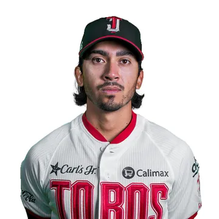
#65Lanzador derecho · Estados Unidos
Abridor: marca de 7-1, 1.94 de efectividad y 70 ponches en 17 aperturas.
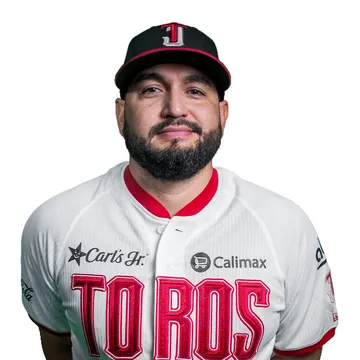
#40Lanzador derecho · México
Abridor: marca de 5-4, 3.98 de efectividad y 62 ponches en 16 aperturas.
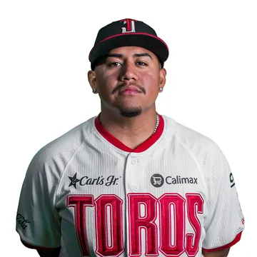
#51Lanzador derecho · Estados Unidos
Relevista: 31 juegos, 2.41 de efectividad y 19 ponches.
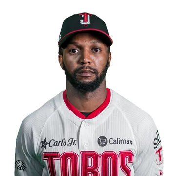
#11Lanzador zurdo · Estados Unidos
Abrió 9 de sus 20 juegos: marca de 3-3 y 4.64 de efectividad.
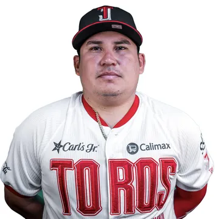
#29Lanzador zurdo · México
Relevista: 17 juegos, 2.66 de efectividad y 22 ponches.
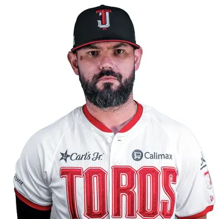
#50Lanzador derecho · México
Relevista: 15 juegos, 3.86 de efectividad y 19 ponches.
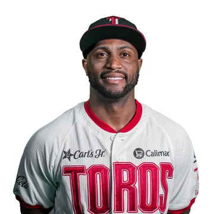
#45Lanzador derecho · República Dominicana
Relevista: 51 juegos, 3.04 de efectividad y 65 ponches.
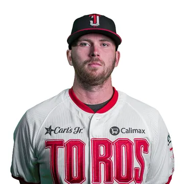
#32Lanzador derecho · Canadá
El abridor con más victorias (9) y ponches (98) del equipo.
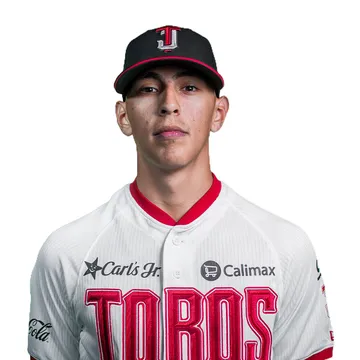
#46Lanzador derecho · México
Relevista: 6 juegos, 8.53 de efectividad y 5 ponches.
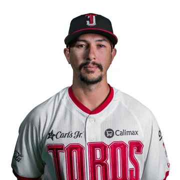
#36Lanzador derecho · Estados Unidos
Abridor: marca de 2-4, 5.55 de efectividad y 33 ponches en 9 aperturas.
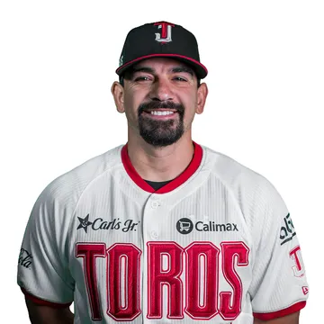
#53Lanzador derecho · Estados Unidos
Relevista: 47 juegos, 1.76 de efectividad y 63 ponches.
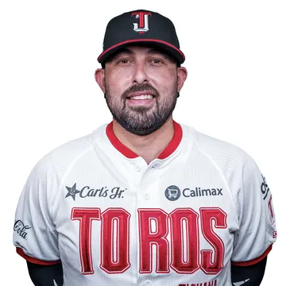
#4Receptor · México
Participó en 18 juegos.
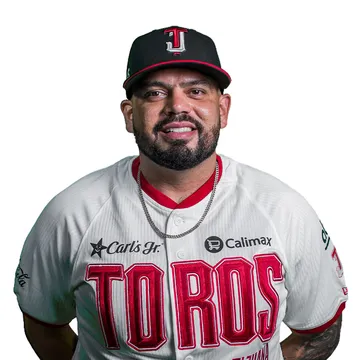
#12Receptor · Estados Unidos
Jugó 7 juegos.
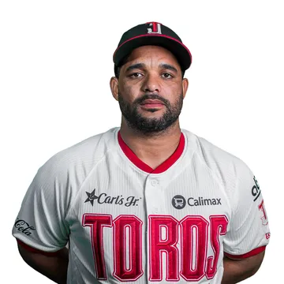
#20Receptor · Venezuela
Bateó .283 con 4 jonrones y 24 producidas en 64 juegos.
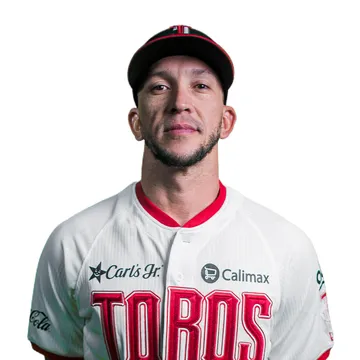
#14Shortstop · Venezuela
Jugador Más Valioso de la Serie del Rey 2026 y líder de producidas del equipo, con 60.
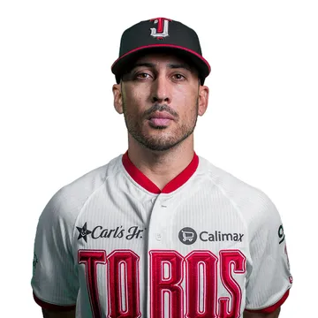
#74Segunda base · México
Bateó .273 con 1 jonrón y 26 producidas en 79 juegos.
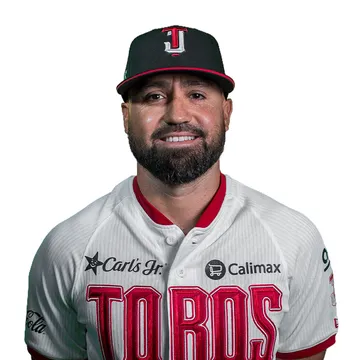
#25Segunda base · Estados Unidos
Bateó .229 con 1 jonrón y 12 producidas en 49 juegos.
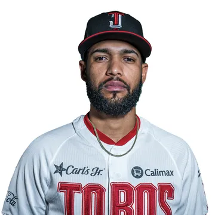
#7Shortstop · República Dominicana
Bateó .292 con 2 jonrones y 20 producidas en 73 juegos.
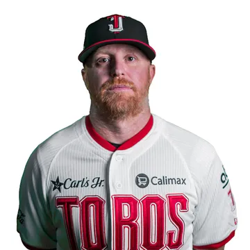
#10Primera base · Estados Unidos
Campeón de Serie Mundial 2020 con los Dodgers. En su primer año en Tijuana bateó .295.
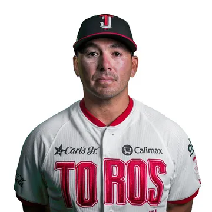
#26Tercera base · Estados Unidos
Bateó .314 con 5 jonrones y 34 producidas en 66 juegos.
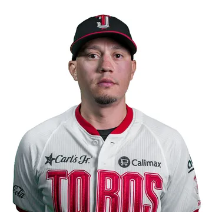
#41Primera base · Venezuela
Bateó .298 con 11 jonrones y 37 producidas en 75 juegos.
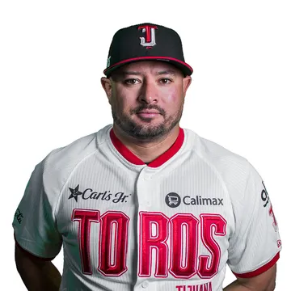
#99Jardín izquierdo · México
Bateó .253 con 2 jonrones y 23 producidas en 48 juegos.
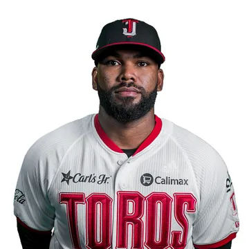
#38Jardinero · República Dominicana
Líder de jonrones del equipo, con 17, y .301 de promedio.
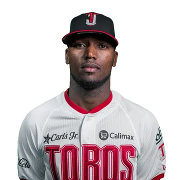
#27Jardín izquierdo · República Dominicana
El mejor promedio del equipo (.323) y 22 bases robadas.
Estadísticas oficiales de la Liga Mexicana de Beisbol, temporada regular 2026.